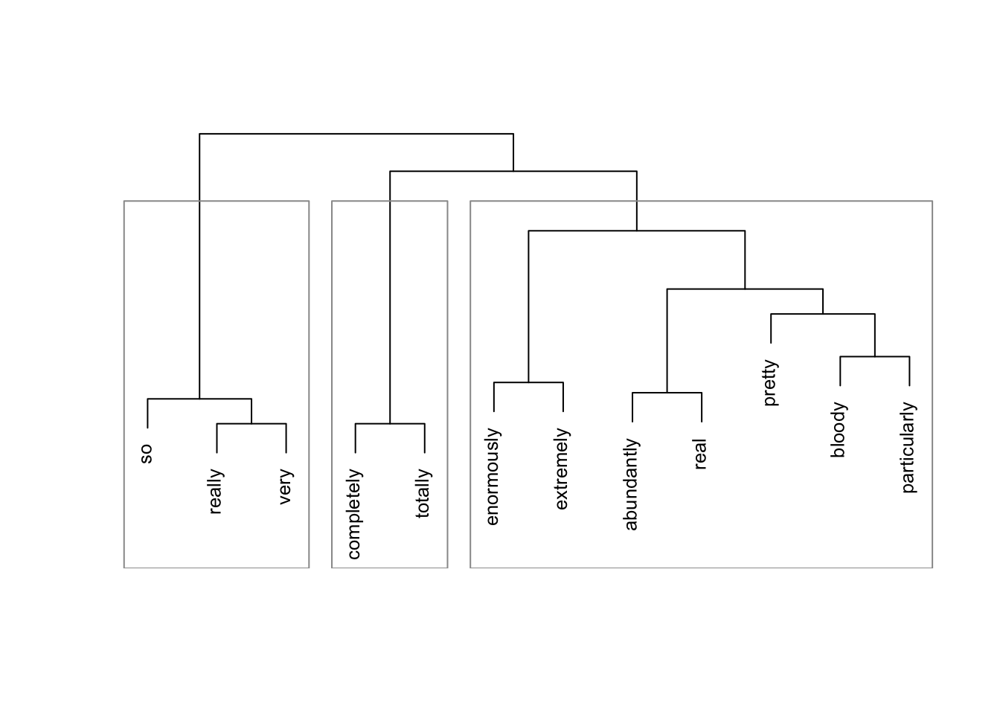

# set options
options("scipen" = 100, "digits" = 4) # suppress math annotation
# install packages
install.packages("coop")
install.packages("dplyr")
install.packages("tm")
install.packages("cluster")
install.packages("flextable")Semantic Vector Space Models in R

Introduction
This tutorial introduces Semantic Vector Space (SVM) modeling R.1 Semantic vector space models, also known as distributional semantic models, are a type of machine learning model that represent the meaning of words or phrases as high-dimensional vectors in a mathematical space. These models are designed to capture the semantic relationships between words based on the distribution of their occurrences in large text corpora.
In semantic vector space models, words or phrases are represented as vectors in a high-dimensional space, where the distance between two vectors reflects the semantic similarity between the corresponding words or phrases. These models are typically trained using unsupervised learning techniques, such as singular value decomposition (SVD) or word2vec, on large corpora of text data.
One of the main advantages of semantic vector space models is that they can capture complex semantic relationships between words, including synonymy, antonymy, hypernymy, and hyponymy. These models can also be used to perform tasks such as language modeling, text classification, sentiment analysis, and information retrieval.
Semantic vector space models are particularly useful in natural language processing (NLP) applications, where the ability to accurately represent the meaning of words and phrases is critical for tasks such as machine translation, text summarization, and question answering. By using semantic vector space models, NLP systems can better understand the meaning of natural language text and improve their performance on a wide range of tasks.

This tutorial is aimed at beginners and intermediate users of R with the aim of showcasing how to generate and visualize results of SVMs in R. The aim is not to provide a fully-fledged analysis but rather to show and exemplify selected useful methods associated with SVMs.
The entire R Notebook for the tutorial can be downloaded here. If you want to render the R Notebook on your machine, i.e. knitting the document to html or a pdf, you need to make sure that you have R and RStudio installed and you also need to download the bibliography file and store it in the same folder where you store the Rmd file.

Click this link to open an interactive version of this tutorial on MyBinder.org.
This interactive Jupyter notebook allows you to execute code yourself and you can also change and edit the notebook, e.g. you can change code and upload your own data.
Preparation and session set up
This tutorial is based on R. If you have not installed R or are new to it, you will find an introduction to and more information how to use R here. For this tutorials, we need to install certain packages from an R library so that the scripts shown below are executed without errors. Before turning to the code below, please install the packages by running the code below this paragraph. If you have already installed the packages mentioned below, then you can skip ahead and ignore this section. To install the necessary packages, simply run the following code - it may take some time (between 1 and 5 minutes to install all of the libraries so you do not need to worry if it takes some time).
Once you have installed R and RStudio and initiated the session by executing the code shown above, you are good to go.
Example: Similarity among adjective amplifiers
Vector Space Models are particularly useful when dealing with language data as they provide very accurate estimates of semantic similarity based on word embeddings (or co-occurrence profiles). Word embeddings refer to the vectors which hold the frequency information about how frequently a given word has co-occurred with other words. If the ordering of co-occurring words remains constant, then the vectors can be used to determine which words have similar profiles.
To show how vector space models work, we will follow the procedure described in Levshina. However, we will not use her Rling package, which is not supported my R version 4.0.2, to calculate cosine similarities but rather the coop package (see Schmidt and Heckendorf). In this tutorial, we investigate similarities among amplifiers based on their co-occurrences (word embeddings) with adjectives. Adjective amplifiers are elements such as those in 1. to 5.
- The veryamplifier niceadjective man.
- A truelyamplifier remarkableadjective woman.
- He was reallyamplifier hesitantadjective.
- The child was awefullyamplifier loudadjective.
- The festival was soamplifier amazingadjective!
The similarity among adjective amplifiers can then be used to find clusters or groups of amplifiers that “behave” similarly and are interchangeable. To elaborate, adjective amplifiers are interchangeable with some variants but not with others (consider 6. to 8.; the question mark signifies that the example is unlikely to be used or grammatically not acceptable by L1 speakers of English).
- The veryamplifier niceadjective man.
- The reallyamplifier niceadjective man.
- ?The completelyamplifier niceadjective man.
We start by loading the required packages, the data, and then displaying the data which is called “vsmdata” and consist of 5,000 observations of adjectives and contains two columns: one column with the adjectives (Adjectives) and another column which has the amplifiers (“0” means that the adjective occurred without an amplifier).
# load packages
library(coop)
library(dplyr)
library(tm)
library(cluster)
library(flextable)
# load data
vsmdata <- read.delim("https://slcladal.github.io/data/vsmdata.txt",
sep = "\t", header = T
)Amplifier | Adjective |
|---|---|
0 | serious |
0 | sure |
so | many |
0 | many |
0 | good |
0 | much |
0 | good |
0 | good |
0 | last |
0 | nice |
For this tutorial, we remove adjectives that were not amplified (as well as adjectives modified by much or many) and collapse all adjectives that occur less than 10 times into a bin category (other).
# simplify data
vsmdata_simp <- vsmdata %>%
# remove non-amplifier adjectives
dplyr::filter(
Amplifier != 0,
Adjective != "many",
Adjective != "much"
) %>%
# collapse infrequent adjectives
dplyr::group_by(Adjective) %>%
dplyr::mutate(AdjFreq = dplyr::n()) %>%
dplyr::ungroup() %>%
dplyr::mutate(Adjective = ifelse(AdjFreq > 10, Adjective, "other")) %>%
dplyr::filter(Adjective != "other") %>%
dplyr::select(-AdjFreq)Amplifier | Adjective |
|---|---|
very | good |
really | nice |
really | good |
really | bad |
very | nice |
really | nice |
very | hard |
bloody | good |
really | nice |
really | good |
In a next step, we create a matrix from this data frame which maps how often a given amplifier co-occurred with a given adjective. In text mining, this format is called a text-document matrix or tdm.
# tabulate data (create term-document matrix)
tdm <- ftable(vsmdata_simp$Adjective, vsmdata_simp$Amplifier)
# extract amplifiers and adjectives
amplifiers <- as.vector(unlist(attr(tdm, "col.vars")[1]))
adjectives <- as.vector(unlist(attr(tdm, "row.vars")[1]))
# attach row and column names to tdm
rownames(tdm) <- adjectives
colnames(tdm) <- amplifiers
# inspect data
tdm[1:5, 1:5] abundantly bloody completely enormously extremely
bad 0 0 0 0 0
big 0 0 0 0 0
clear 1 0 0 0 0
different 0 0 4 0 0
difficult 0 0 0 1 3Now that we have a term document matrix, we want to remove adjectives that were never amplified. Note however that if we were interested in classifying adjectives (rather than amplifiers) according to their co-occurrence with amplifiers, we would, of course, not do this, as not being amplified would be a relevant feature for adjectives. But since we are interested in classifying amplifiers, not amplified adjectives do not have any information value.
# convert frequencies greater than 1 into 1
tdm <- t(apply(tdm, 1, function(x) {
ifelse(x > 1, 1, x)
}))
# remove adjectives that we never amplified
tdm <- tdm[which(rowSums(tdm) > 1), ]
# inspect data
tdm[1:5, 1:5]
abundantly bloody completely enormously extremely
bad 0 0 0 0 0
big 0 0 0 0 0
clear 1 0 0 0 0
different 0 0 1 0 0
difficult 0 0 0 1 1In a next step, we extract the expected values of the co-occurrences if the amplifiers were distributed homogeneously and calculate the Pointwise Mutual Information (PMI) score and use that to then calculate the Positive Pointwise Mutual Information (PPMI) scores. According to Levshina 327 - referring to Bullinaria and Levy - PPMI perform better than PMI as negative values are replaced with zeros. In a next step, we calculate the cosine similarity which will for the bases for the subsequent clustering.
# compute expected values
tdm.exp <- chisq.test(tdm)$expectedWarning in chisq.test(tdm): Chi-squared approximation may be incorrect# calculate PMI and PPMI
PMI <- log2(tdm / tdm.exp)
PPMI <- ifelse(PMI < 0, 0, PMI)
# calculate cosine similarity
cosinesimilarity <- cosine(PPMI)
# inspect cosine values
cosinesimilarity[1:5, 1:5] abundantly bloody completely enormously extremely
abundantly 1 0 0 0.0000000 0.0000000
bloody 0 1 0 0.0000000 0.0000000
completely 0 0 1 0.0000000 0.0000000
enormously 0 0 0 1.0000000 0.6628518
extremely 0 0 0 0.6628518 1.0000000As we have now obtained a similarity measure, we can go ahead and perform a cluster analysis on these similarity values. However, as we have to extract the maximum values in the similarity matrix that is not 1 as we will use this to create a distance matrix. While we could also have simply subtracted the cosine similarity values from 1 to convert the similarity matrix into a distance matrix, we follow the procedure proposed by Levshina.
# find max value that is not 1
cosinesimilarity.test <- apply(cosinesimilarity, 1, function(x) {
x <- ifelse(x == 1, 0, x)
})
maxval <- max(cosinesimilarity.test)
# create distance matrix
amplifier.dist <- 1 - (cosinesimilarity / maxval)
clustd <- as.dist(amplifier.dist)In a next step, we want to determine the optimal number of clusters. This has two reasons: firstly, we need to establish that we have reason to assume that the data is not homogeneous (this would occur if the optimal number of clusters were 1), and, secondly, we want check how many meaningful clusters there are in our data.
# find optimal number of clusters
asw <- as.vector(unlist(sapply(2:ncol(tdm) - 1, function(x) pam(clustd, k = x)$silinfo$avg.width)))
# determine the optimal number of clusters (max width is optimal)
optclust <- which(asw == max(asw)) # optimal number of clusters
# inspect clustering with optimal number of clusters
amplifier.clusters <- pam(clustd, optclust)
# inspect cluster solution
amplifier.clusters$clustering abundantly bloody completely enormously extremely particularly
1 1 2 3 3 3
pretty real really so totally very
2 1 2 2 2 2 In a next step, we visualize the results of the semantic vector space model as a dendrogram.
# create cluster object
cd <- hclust(clustd, method = "ward.D")
# plot cluster object
plot(cd, main = "", sub = "", yaxt = "n", ylab = "", xlab = "", cex = .8)
# add colored rectangles around clusters
rect.hclust(cd, k = optclust, border = "gray60")
The clustering solution shows that,
- really, so, and very
- completely and totally
- all other amplifiers.
form clusters and are thus more similar in their collocational profile to each other compared to amplifiers in different clusters. Also, this suggests that amplifiers in the same cluster are more interchangable compared with amplifiers in different clusters.
It is important to note though that the data set is of rather moderate size which means that differences are unlikely to be detected due to the relative rarity of the amplifier (which is the reason why there is one umbrella cluster). Also, the amplifiers very, so, and really form a cluster together probably due to the fact that really, very, and so are the most frequent “variants” and because they co-occur with the most variety of adjectives. The results can be interpreted to suggest that really, so, and very are “default” amplifiers that lack distinct semantic profiles.
There are many more useful methods for classifying and grouping data and the tutorial by Gede Primahadi Wijaya Rajeg, Karlina Denistia, and Simon Musgrave (Rajeg, Denistia, and Musgrave) highly recommended to get a better understanding of SVM but this should suffice to get you started.
Citation & Session Info
Schweinberger, Martin. 2023. Semantic Vector Space Models in R. Brisbane: The University of Queensland. url: https://ladal.edu.au/svm.html (Version 2023.02.16).
@manual{schweinberger2023svm,
author = {Schweinberger, Martin},
title = {Semantic Vector Space Models in R},
note = {https://ladal.edu.au/svm.html},
year = {2023},
organization = "The University of Queensland, Australia. School of Languages and Cultures},
address = {Brisbane},
edition = {2023.02.16}
}sessionInfo()R version 4.4.1 (2024-06-14)
Platform: aarch64-apple-darwin20
Running under: macOS Sonoma 14.6.1
Matrix products: default
BLAS: /Library/Frameworks/R.framework/Versions/4.4-arm64/Resources/lib/libRblas.0.dylib
LAPACK: /Library/Frameworks/R.framework/Versions/4.4-arm64/Resources/lib/libRlapack.dylib; LAPACK version 3.12.0
locale:
[1] en_US.UTF-8/en_US.UTF-8/en_US.UTF-8/C/en_US.UTF-8/en_US.UTF-8
time zone: Australia/Brisbane
tzcode source: internal
attached base packages:
[1] stats graphics grDevices utils datasets methods base
other attached packages:
[1] flextable_0.9.7 cluster_2.1.6 tm_0.7-14 NLP_0.3-0
[5] dplyr_1.1.4 coop_0.6-3
loaded via a namespace (and not attached):
[1] jsonlite_1.8.9 compiler_4.4.1 zip_2.3.1
[4] tidyselect_1.2.1 Rcpp_1.0.13 slam_0.1-54
[7] xml2_1.3.6 parallel_4.4.1 fontquiver_0.2.1
[10] textshaping_0.4.0 systemfonts_1.1.0 uuid_1.2-1
[13] fastmap_1.2.0 R6_2.5.1 gdtools_0.4.0
[16] generics_0.1.3 knitr_1.48 htmlwidgets_1.6.4
[19] tibble_3.2.1 openssl_2.2.2 pillar_1.9.0
[22] rlang_1.1.4 utf8_1.2.4 xfun_0.49
[25] cli_3.6.3 withr_3.0.2 magrittr_2.0.3
[28] digest_0.6.37 grid_4.4.1 askpass_1.2.1
[31] lifecycle_1.0.4 vctrs_0.6.5 evaluate_1.0.1
[34] glue_1.8.0 data.table_1.16.2 fontLiberation_0.1.0
[37] officer_0.6.7 codetools_0.2-20 ragg_1.3.3
[40] fontBitstreamVera_0.1.1 fansi_1.0.6 rmarkdown_2.28
[43] tools_4.4.1 pkgconfig_2.0.3 htmltools_0.5.8.1 References
Bullinaria, J. A., and J. P. Levy. “Extracting Semantic Representations from Word Co-Occurrence Statistics: A Computational Study.” Behavior Research Methods, 510–26.
Levshina, Natalia. How to Do Linguistics with r: Data Exploration and Statistical Analysis. Amsterdam: John Benjamins Publishing Company.
Rajeg, Gede Primahadi Wijaya, Karlina Denistia, and Simon Musgrave. “R Markdown Notebook for Vector Space Model and the Usage Patterns of Indonesian Denominal Verbs.” https://doi.org/10.6084/m9.figshare.9970205.v1.
Schmidt, Drew, and Christian Heckendorf. Coop: Co-Operation: Fast Covariance, Correlation, and CosineSimilarity Operations. https://CRAN.R-project.org/package = coop.
Footnotes
I am indebted to Paul Warren who kindly pointed out some errors in a previous version of this tutorial.↩︎